古い家をそのまま使うのが不安
傷みや古さが目立つ家でも、使える部分を活かしながら整える方向でご相談いただけます。
中古住宅の再生、賃貸退去後の立て直し、空き家の活用前整備など、 「どこから直すべきかわからない」という段階からご相談いただけます。
傷みや古さが目立つ家でも、使える部分を活かしながら整える方向でご相談いただけます。
和室・リビング・水回り・建具など、生活導線を含めてまとめて整えたいケースに対応します。
ただ戻すだけではなく、次の入居や活用を見据えた整備をご希望の方にも適しています。
見た目だけを変えるのではなく、住まいとしての使いやすさと再生力を重視しています。
一部屋だけきれいでも、ほかとの落差が大きいと満足度は下がります。全体バランスを見ながら整えます。
古い家特有の暗さ、使いにくさ、古びた印象を減らし、日常で使いやすい状態を目指します。
写真で比較できる施工が多いため、仕上がりのイメージを持っていただきやすいのも強みです。
見た目だけでなく、空間の印象や使いやすさがどう変わるかを、施工前後写真でご確認いただけます。
古い和室を、明るく整った空間へ。部屋の印象が大きく変わる代表的な施工例です。
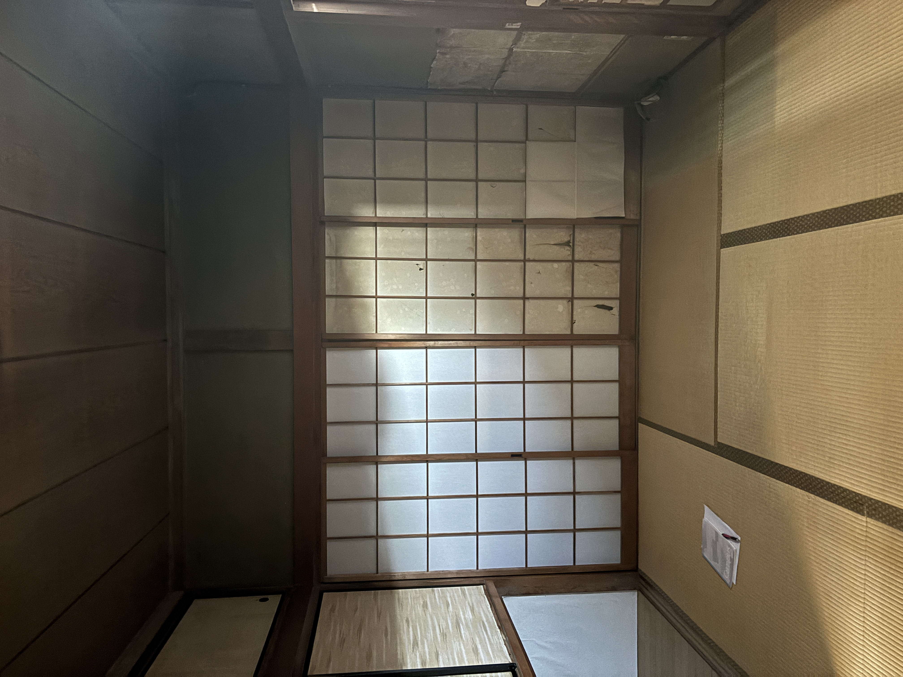
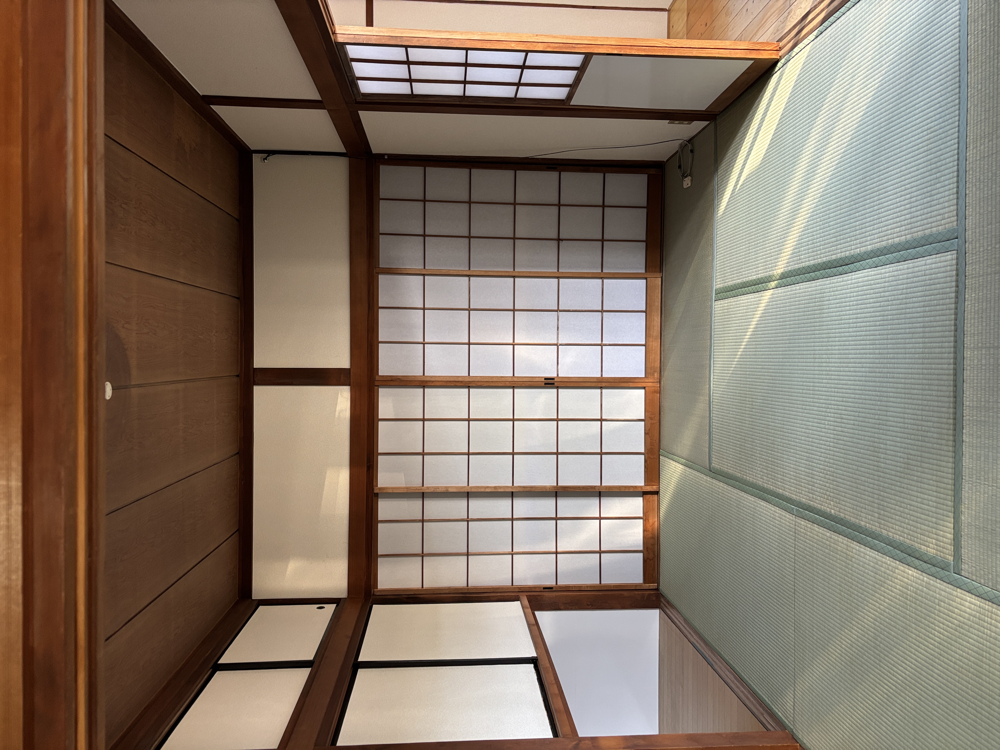
暗さや古さが残る空間を、明るく使いやすいリビングへ。家全体の印象にもつながる重要な部分です。
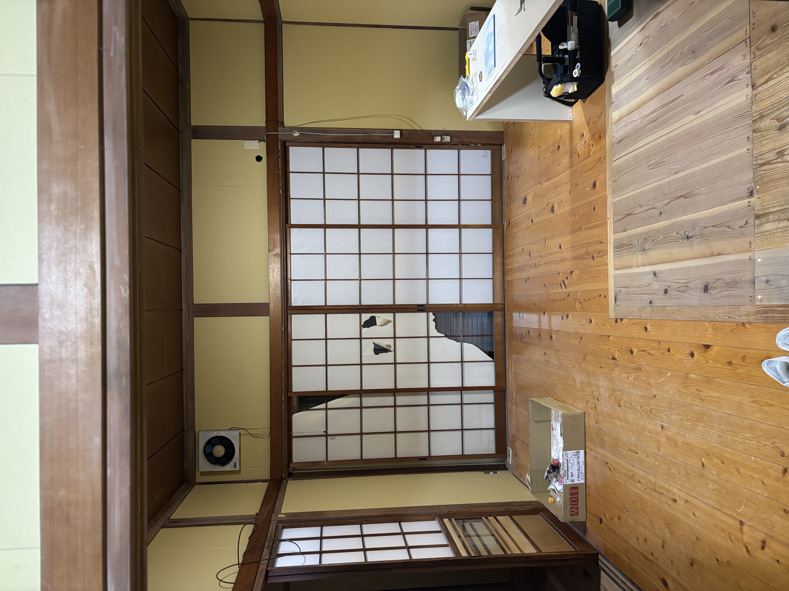
傷みや古さが見えやすい壁面も、仕上がりの印象を左右する大事な部分。細かい施工力が伝わる事例です。
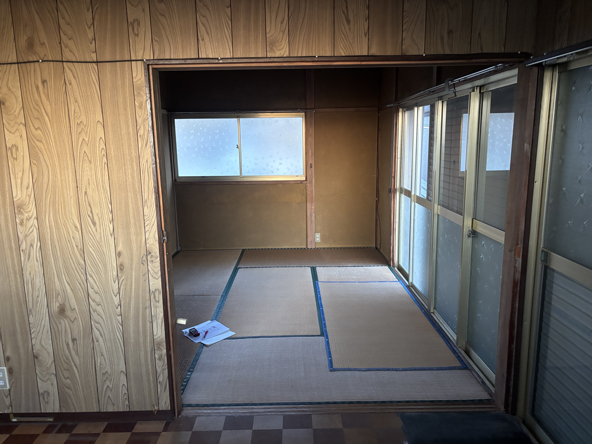
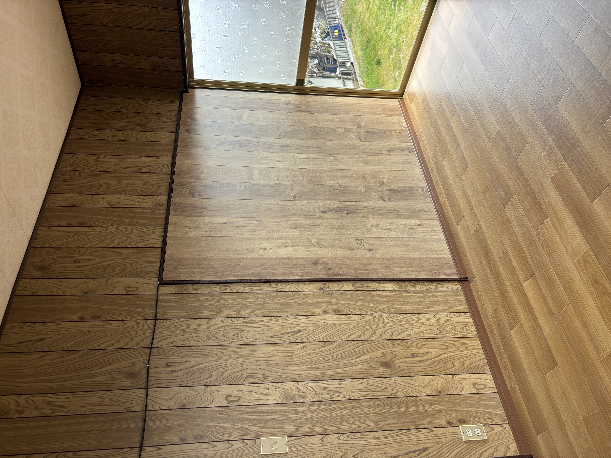
日常で最も使用頻度が高いキッチンは、交換による満足度が出やすい部分です。見た目も使い勝手も大きく変わります。
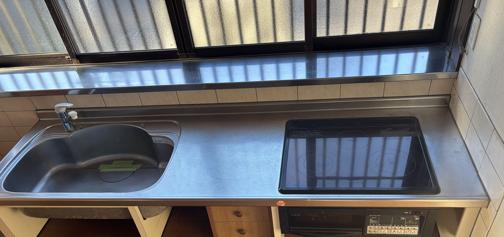
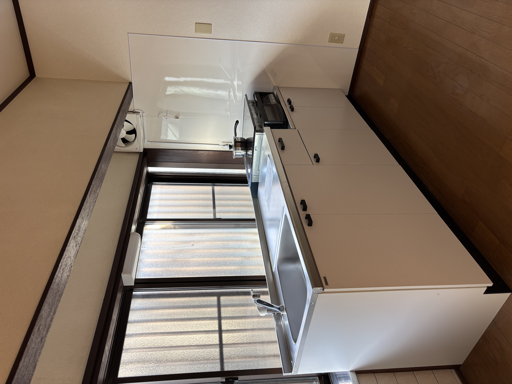
洗面スペースは生活感が出やすい場所です。設備更新により、毎日使う空間としての印象が大きく向上します。
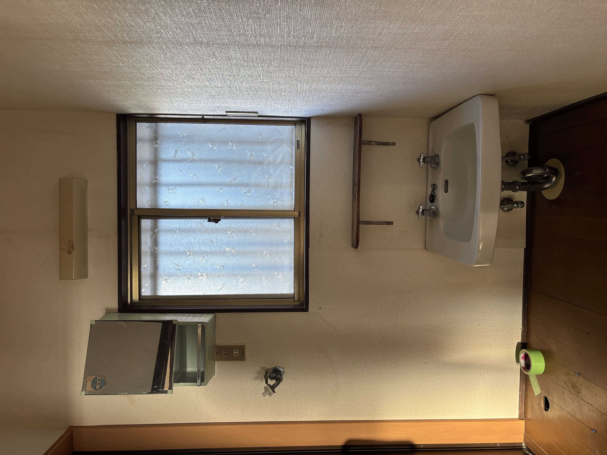
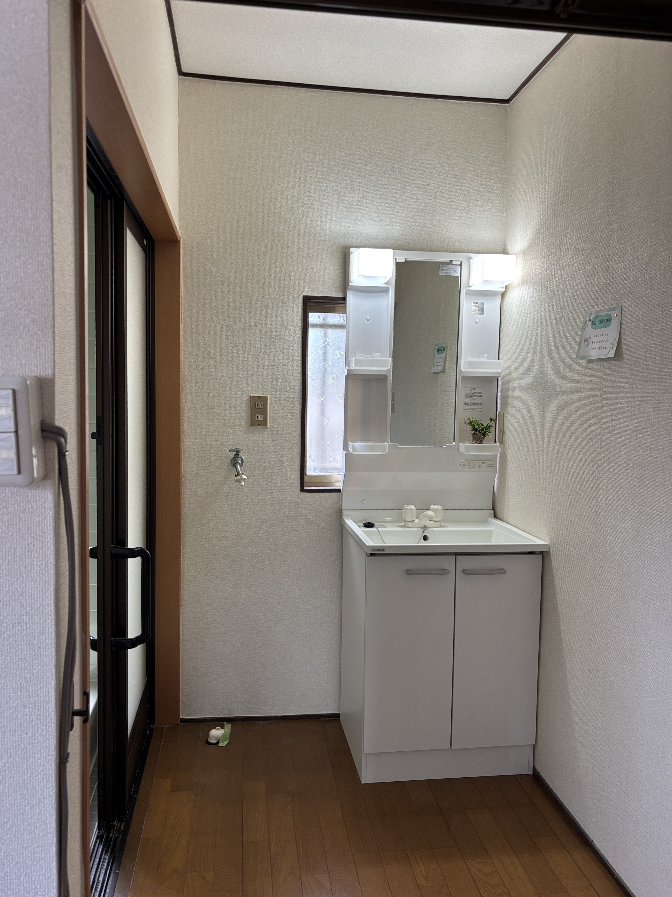
小さな空間でも、仕上がりの差は大きく出ます。使える部屋として再生できるかどうかが、物件全体の印象にも関わります。
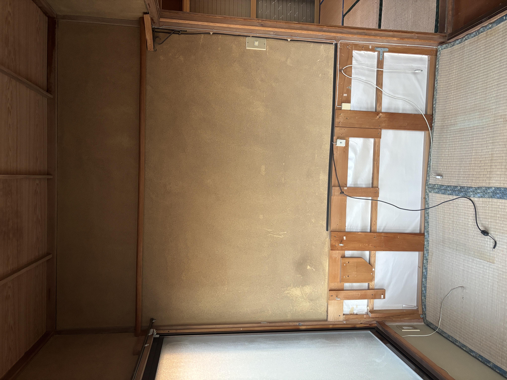
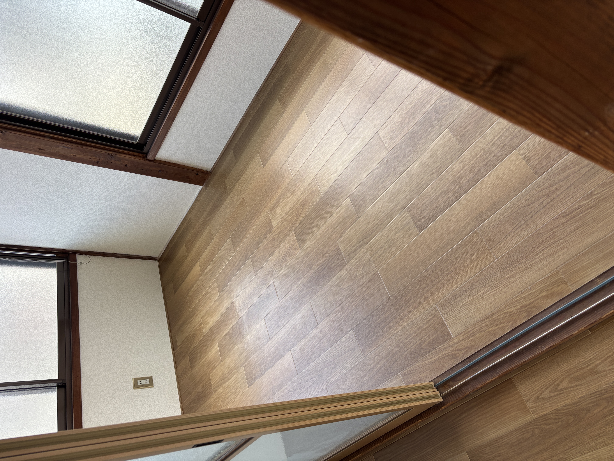
初めての方でも進めやすいよう、現地確認からご提案まで整理して対応します。
お困りごと、物件状況、ご希望の方向性を伺います。
居室、水回り、細部の状態などを確認します。
状態に応じて、工事内容や進め方を整理してご案内します。
工程を踏みながら、見た目と使いやすさの両面を整えます。
仕上がりを確認し、次に使いやすい状態まで整えます。
可能です。まずは現状のお悩みや使い方を伺い、必要な方向性を整理していきます。
はい。水回り、居室、細部の整備など、規模に応じてご相談いただけます。
可能です。再活用や次の入居を見据えた整備としてご相談ください。
状態によりますが、古さがある住宅の再生や立て直しもご相談いただけます。